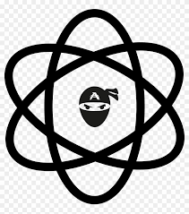
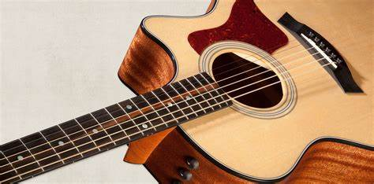

Xi Nan
School email: xnan6@gatech.edu | Personal email: xinan773@gmail.com
Hello I am Xi Nan I go by Nanxi. I am an undergraduate student currently studying computer science with concentration on Intelligence
and media at Georgia Tech. I am Looking for an internship as a software engineer. I am dedicated to continuous improvement and building career
foundations. Offer strong collaborative, time management and multitasking skills.
Research interests:
Machine learning, deep learning, web development, software development.

- Hometown: LA and China
- Year: Sophomore
- Major: Computer Science
- Hobbies: coding, guitar, swimming, games, anime
- Other Involvements: swim club, game dev club, Bits of Good
- Proficient in Java and Python, React, JavaScript, HTML, CSS. Beginner in C#, C, C++
-
- Other: GitHub, VS code, IntelliJ, Unity, Android Studio
- Languages: English (fluent), Chinese (fluent), French (beginner)
Projects:
BykeSafe: Developed a modern micro-mobility safety aid to encourage a broader usage of micro-mobility vehicles in areas around Atlanta. IR-cameras and algorithms are used to detect temperature differences between parked cars and environment
Bits of Good: Develop bootcamper. Worked on team projects for this non-profit organization on VS code using react. Designed a website for animal adoption for Atlanta animal shelters
Paravoid: Horror game developed using Unity.